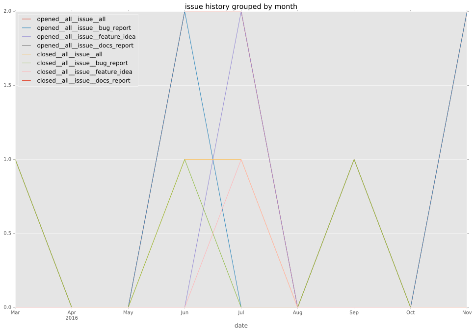
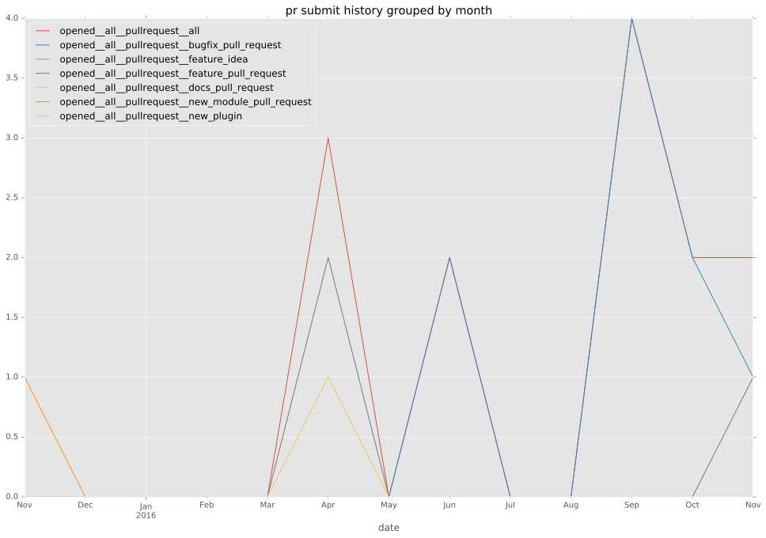
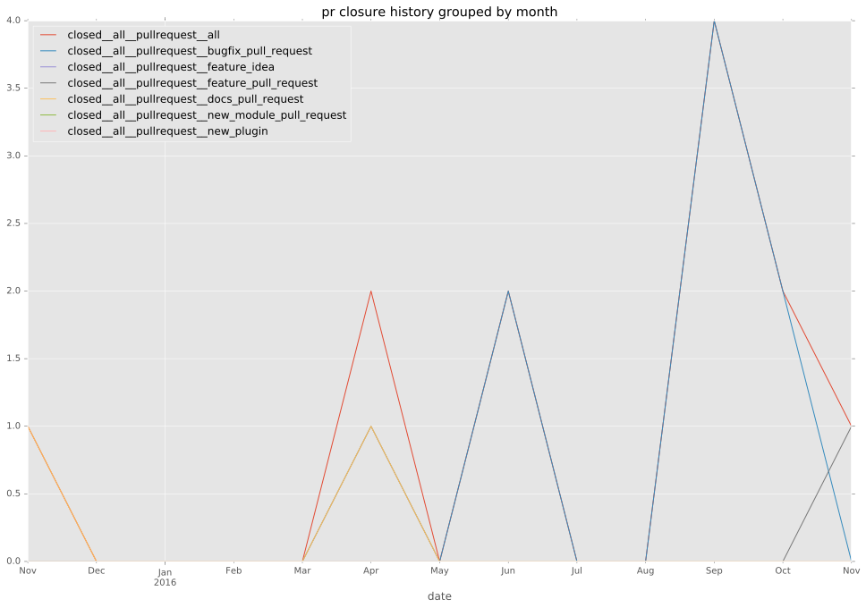

authors
- privateip
maintainers
- privateip
- gundalow
contributors
- privateip : 110 commits
- gundalow : 6 commits
- kkirsche : 1 commits
total issue counts
bugfix pull request: 14
pullrequest: 21
docs pull request: 4
feature pull request: 3
feature idea: 1
issue: 5
bug report: 4
issue history

pullrequest history


days open by issue type
feature pull request
count: 5
std: 28.1744565165
min: 0
max: 67
median: 10.0
mean: 17.4
all
count: 42
std: 10.4566190853
min: 0
max: 67
median: 0.0
mean: 2.30952380952
pullrequest
count: 0
std: nan
min: nan
max: nan
median: nan
mean: nan
docs pull request
count: 8
std: 0.0
min: 0
max: 0
median: 0.0
mean: 0.0
bugfix pull request
count: 26
std: 0.491465625999
min: 0
max: 2
median: 0.0
mean: 0.192307692308
feature idea
count: 0
std: nan
min: nan
max: nan
median: nan
mean: nan
issue
count: 0
std: nan
min: nan
max: nan
median: nan
mean: nan
bug report
count: 3
std: 1.15470053838
min: 1
max: 3
median: 1.0
mean: 1.66666666667
closures grouped by total days open